About Nadiya
Nadiya is an extraordinary woman who lights up my world with her presence. Her smile is like sunshine, and her laughter is music to my ears. She has a heart of gold and a spirit that is both gentle and strong. Nadiya's love and kindness have touched my soul in ways I never thought possible.
Our Love Story
Once upon a time, in the late days of August, Nadiya and I began a conversation that would forever change our lives. Little did I know that this chance encounter would lead to a deep and profound connection between us. As we got to know each other, I discovered Nadiya's wonderful and unique qualities. She had a love for boba, finding joy in the delightful flavors and textures it offered. We spent countless evenings sipping on boba together, sharing laughter and stories. Nadiya's passion for reading was evident in her vast collection of books. We would often exchange recommendations, diving into different worlds and losing ourselves in the magic of literature. It was during these moments that I realized how our minds intertwined, our shared love for storytelling strengthening our bond. One of the things that stood out about Nadiya was her impeccable sense of humor. She had an innate ability to make me smile, even during the most challenging of days. Her funny anecdotes and witty remarks would light up the room, and I couldn't help but fall deeper in love with her infectious laughter. Beyond her humor, Nadiya's intelligence shone brightly. Conversations with her were intellectually stimulating, challenging me to expand my perspectives and learn from her wealth of knowledge. Her insights into the world were thought-provoking, and I admired her ability to analyze situations with depth and wisdom. Nadiya's captivating presence made every moment with her interesting and engaging. Whether we were exploring new places, engaging in deep conversations, or simply enjoying each other's company in comfortable silence, the time spent with her was precious and cherished. However, I made a grave mistake that threatened to shatter our relationship. I hurt Nadiya, causing her pain and heartache. The weight of my actions weighed heavily on me, realizing that I had jeopardized the love we shared. Filled with remorse and regret, I reached out to Nadiya, expressing the depth of my apologies and how truly sorry I was for my actions. I admitted my wrongdoings and acknowledged the pain I had caused. With a heavy heart, I humbly asked for her forgiveness, hoping that she would find it in her heart to grant me another chance. As I reflect upon our journey together, I realize that Nadiya is the love of my life. Her presence fills my days with joy, and the thought of losing her is unbearable. I can only hope that she sees the sincerity in my words and feels the depth of my love for her. The road to forgiveness may be long and uncertain, but I am willing to do whatever it takes to regain her trust and make amends. And so, the story of Nadiya and I continues, with a glimmer of hope and a fervent desire for redemption. May our love endure, and may Nadiya find it in her heart to forgive me, allowing us to embark on a new chapter filled with love, understanding, and a promise of a brighter future together.
Gallery
 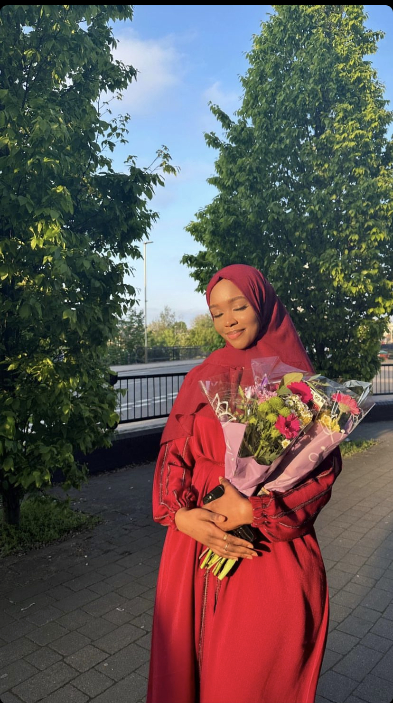
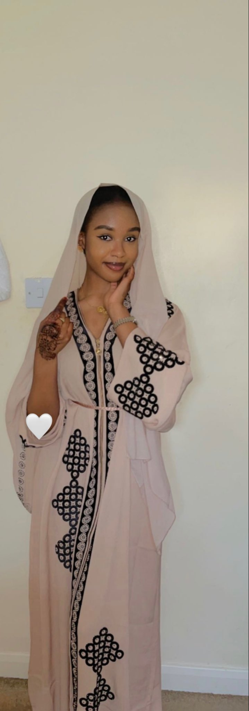
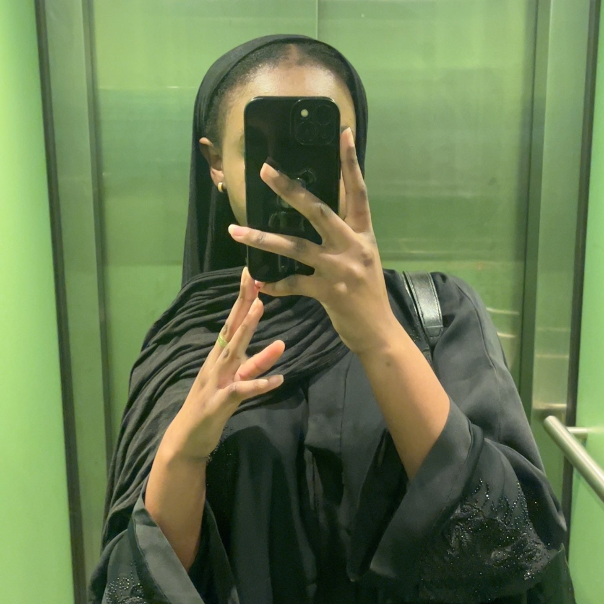
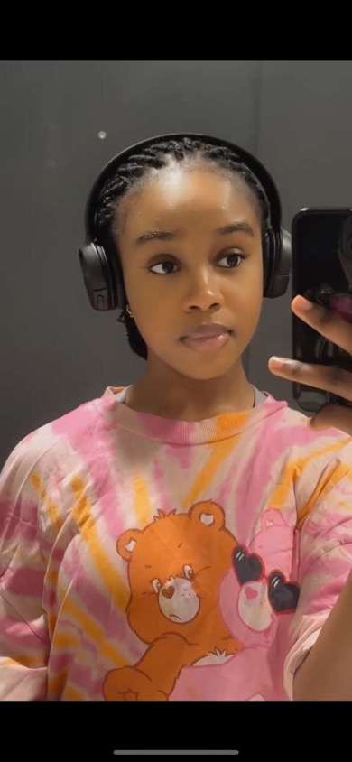
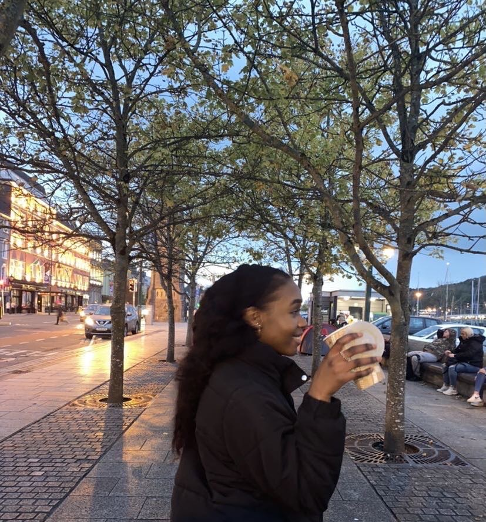
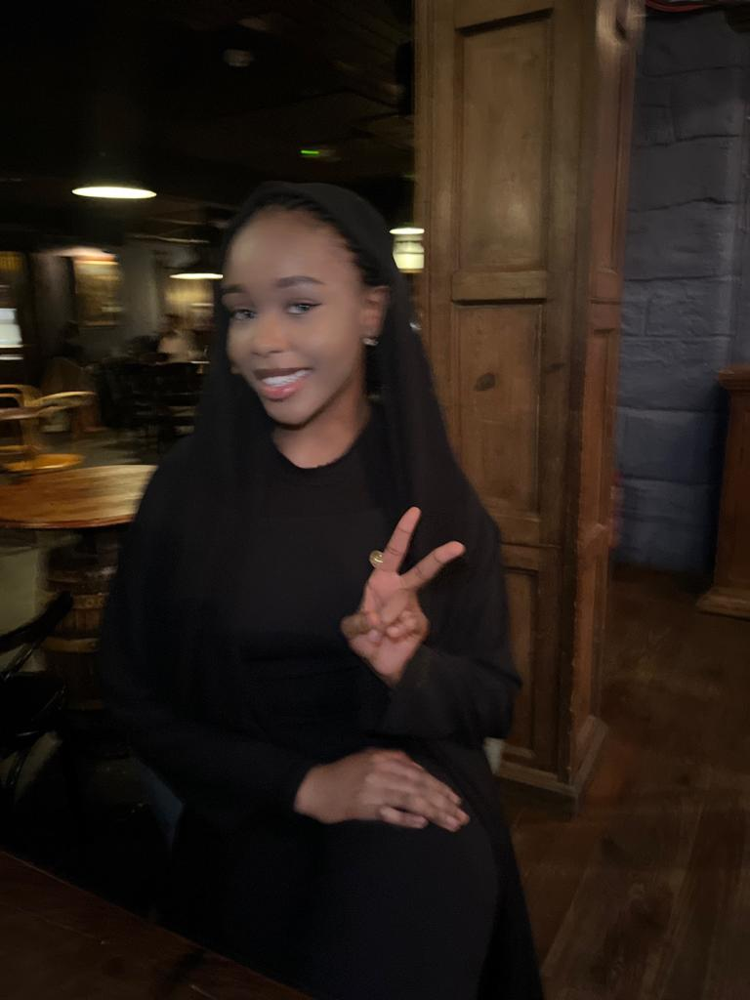
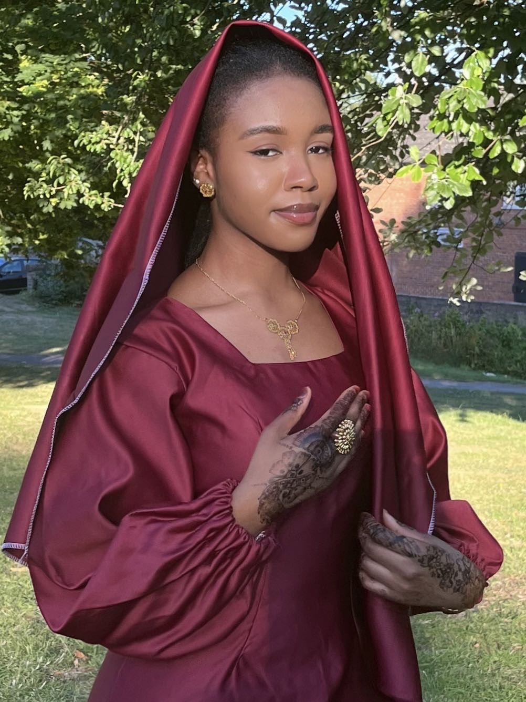
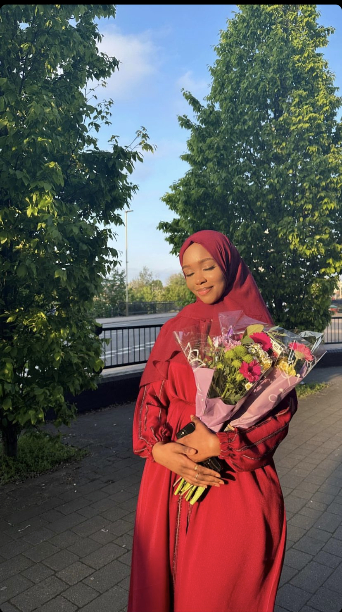
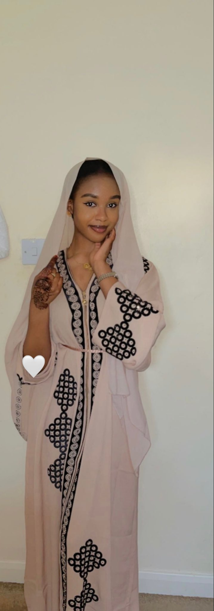
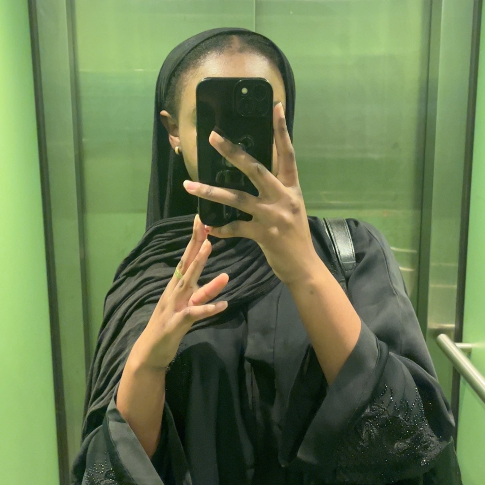
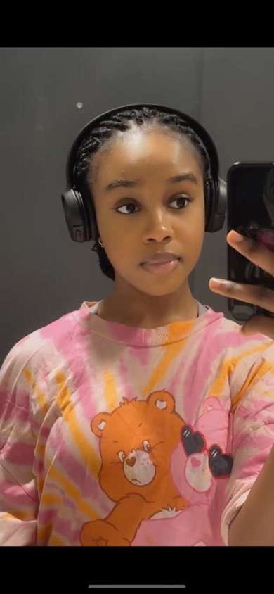
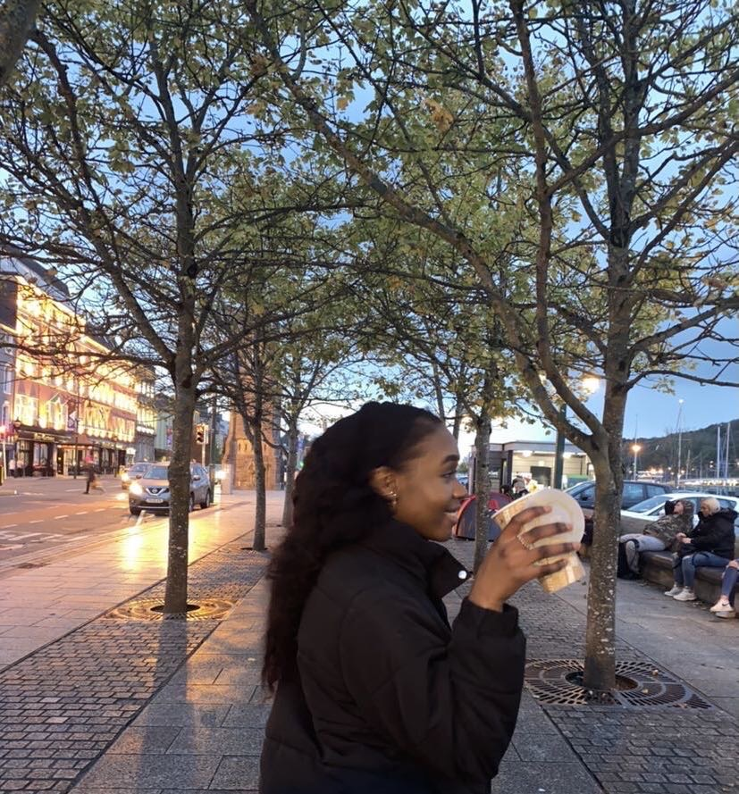
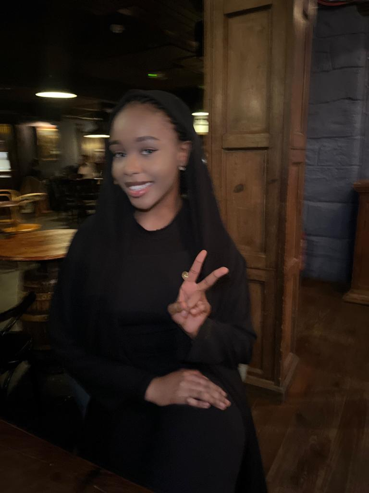
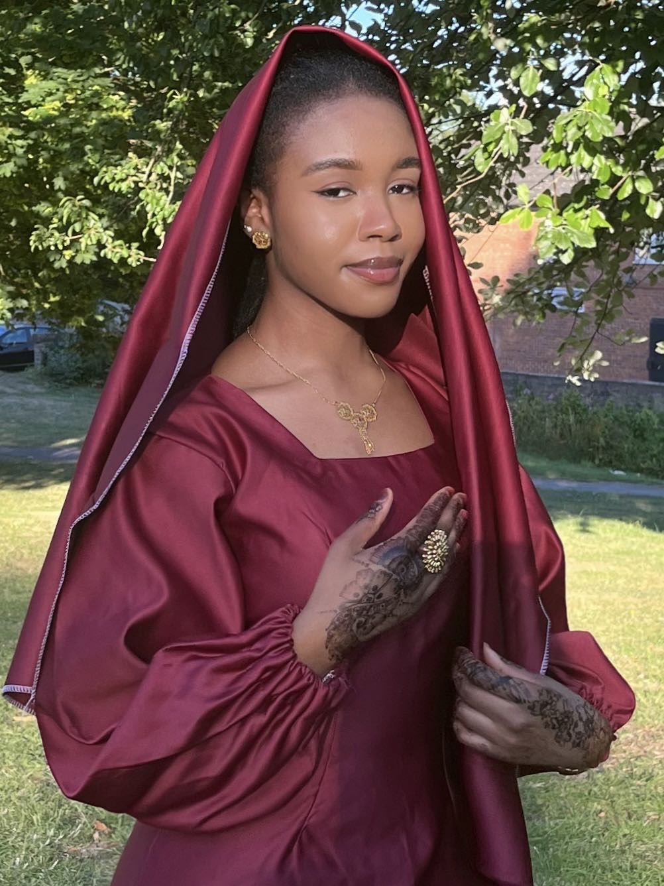
Love Quotes
"You have found true love when you realize that you want to wake up beside your love every morning, even when you have your differences." - B.D. Bello
"Love recognizes no barriers. It jumps hurdles, leaps fences, penetrates walls to arrive at its destination full of hope." - Maya Angelou
Love is composed of a single soul inhabiting two bodies." - Aristotle
"You know you're in love when you can't fall asleep because reality is finally better than your dreams." - Dr. Seuss
"In all the world, there is no heart for me like yours. In all the world, there is no love for you like mine." - Maya Angelou
"Love is when the other person's happiness is more important than your own." - H. Jackson Brown Jr.
"Love recognizes no barriers. It jumps hurdles, leaps fences, penetrates walls to arrive at its destination full of hope." - Maya Angelou